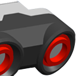
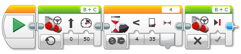
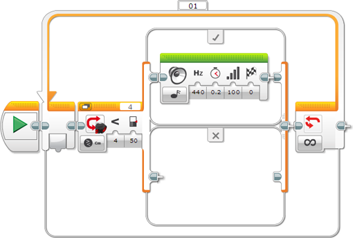
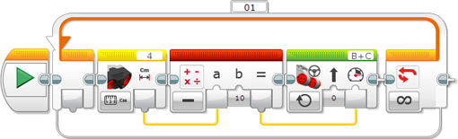

					<table cellpadding="0" cellspacing="0" border="0"><tbody><tr><td>
	
						<h1>使用超声波传感器<a name="top"></a></h1>
		<div id="block_919" class="block blockHeader">
				<table cellspacing="0" cellpadding="0" border="0">
			<tbody><tr>
				<td valign="top" class="image"></td>
				<td valign="top" class="description"><div class="text-wrapper">超声波传感器可以测量与前方物体之间的距离。实现方式是发送出声波并测量声音反射回传感器所需的时间长度。声音频率太高，您无法听见（“超声波”）。<br>
<br>
可以按英寸或厘米为单位测量与对象之间的距离。例如，可以使用此传感器使机器人在距离墙壁的特定距离处停止。<br>
<br>
还可以使用超声波传感器检测附近的其他超声波传感器是否正在运行。例如，可以使用此传感器检测附近是否存在正使用超声波传感器的其他机器人。在此“仅侦听”模式中，传感器会侦听声音信号，但是不发送这些信号。</div></td>
			</tr>
		</tbody></table>
			</div>
	<div id="block_920" class="block blockChaptor">
		<div class="title"><a name="UltrasonicSensorData" style="position:relative; top:-10px;"></a>超声波传感器数据</div>
		<div class="description">超声波传感器可以提供以下数据：</div>
	</div>
	<div id="block_921" class="block blockTable ">
		<table class="blockTable">
		

			<tbody><tr>
<th>数据</th><th>类型</th><th>范围</th><th>备注</th>			</tr>
<tr><td>距离（厘米）</td><td>数字</td><td>0 至 255</td><td>与对象之间的距离（以厘米为单位）。</td></tr><tr><td>距离（英寸）</td><td>数字</td><td>0 至 100</td><td>与对象之间的距离（以英寸为单位）。</td></tr><tr><td>检测到超声波</td><td>逻辑</td><td>真/伪</td><td>如果检测到其他超声波传感器，则为“真”。</td></tr>		</tbody></table>
	</div>
	<div id="block_922" class="block blockTip">
		<div class="title">提示和技巧</div>
		<div class="boxContent">
			<div class="description"></div>
			<div id="block_924" class="block blockTable bullets">
		<table class="blockTable">
		
<tbody><tr><td>•</td><td>超声波传感器最适用于检测具有可良好反射声音的硬表面的物体。软物体（如布）可能会吸收声波，而不会被检测到。具有圆形或有角表面的物体也较难以检测到。 </td></tr><tr><td>•</td><td>该传感器无法检测非常接近于传感器（大约 3 厘米或 1.5 英寸以内）的物体。 </td></tr><tr><td>•</td><td>该传感器具有较宽“视野”，可以检测靠近侧面的较近物体，而不是直线前方的较远物体。 </td></tr>		</tbody></table>
	</div>
		</div>
	</div>
	<div id="block_925" class="block blockChaptor">
		<div class="title"><a name="ExamplesUsingTheUltrasonicSensor" style="position:relative; top:-10px;"></a>超声波传感器使用示例</div>
		<div class="description">下面演示了有关在程序中如何使用超声波传感器的一些示例。</div>
	</div>
	<div id="block_926" class="block blockExample">
		<div class="title">示例 1：在墙壁之前的特定距离处停止</div>
		<div class="image"></div>
		<div class="description">此程序使机器人向前驱动，直至超声波传感器检测到 10 英寸以内存在物体，随后机器人停止。此程序使用“超声波传感器 － 比较 － 距离（英寸）”模式的<a href="./index.html?id=Wait">等待</a>模块等待检测到的距离小于 10 英寸。如果超声波传感器朝向前方，则机器人会在墙壁之前大约 10 英寸处停止。</div>
	</div>
	<div id="block_927" class="block blockTip">
		<div class="title">提示和技巧</div>
		<div class="boxContent">
			<div class="description">当需要在等待传感器期间驱动时，请记住使用移动转向模块的“开启”模式。</div>
				</div>
	</div>
	<div id="block_929" class="block blockExample">
		<div class="title">示例 2：在附近检测到物体时发出警报</div>
		<div class="image"></div>
		<div class="description">只要超声波传感器检测到 50 厘米以内的物体，此程序便让机器人发出声音。此程序将<a href="./index.html?id=CaseSelector">切换</a>与“超声波传感器 － 比较 － 距离（厘米）”模式一起使用以测试检测到的距离是否小于 50 厘米。如果是这样，则切换会播放音调。切换在循环中重复执行，以便持续重复进行测试。</div>
	</div>
	<div id="block_930" class="block blockTip">
		<div class="title">提示和技巧</div>
		<div class="boxContent">
			<div class="description">当运行此程序时，尝试在传感器前方四处移动物体以实验传感器“视野”的宽广程度。</div>
				</div>
	</div>
	<div id="block_932" class="block blockExample">
		<div class="title">示例 3：在达到物体之前逐渐减速</div>
		<div class="image"></div>
		<div class="description">此程序使机器人逐渐减速，然后在距离其前方检测到的任何物体大约 10 厘米处停止。它距离物体越近，驱动速度便越慢。 <br>
<br>
此程序使用“测量 － 距离（厘米）”模式的<a href="./index.html?id=UltrasonicSensor">超声波传感器</a>模块获取距离测量并通过数据线获取生成的数字。<a href="./index.html?id=Math">数学</a>模块随后从距离中减去 10，结果会连线到<a href="./index.html?id=Move">移动转向</a>模块的“功率”输入。较短距离会生成较低功率，当距离达到 10 厘米时，功率会为零，机器人会停止。该过程在循环中重复执行，以便基于新距离测量持续调整电机功率。</div>
	</div>
	<div id="block_933" class="block blockTip">
		<div class="title">提示和技巧</div>
		<div class="boxContent">
			<div class="description">还可以尝试在此程序运行期间移动物体。机器人会持续调整其速度。</div>
				</div>
	</div>
	<div id="block_935" class="block blockChaptor">
		<div class="title"><a name="UltrasonicSensorBlocksAndModes" style="position:relative; top:-10px;"></a>超声波传感器模块和模式</div>
		<div class="description">下表显示可以与超声波传感器一起使用的所有编程模块和模式。“距离”模式具有使您可以在厘米与英寸之间进行选择的子模式。</div>
	</div>
	<div id="block_936" class="block blockTable ">
		<table class="blockTable">
		

			<tbody><tr>
<th>模块</th><th>模式</th><th>用途</th>			</tr>
<tr><td><a href="./index.html?id=Wait">等待</a> <a name="Mode_WaitUltrasonicSensorCompareCentimeters" style="position:relative; top:-10px;"></a>  <a name="Mode_WaitUltrasonicSensorCompareInches" style="position:relative; top:-10px;"></a></td><td>超声波传感器 － 比较 － 距离</td><td>等待距离达到特定值。</td></tr><tr><td><a href="./index.html?id=Wait">等待</a></td><td>超声波传感器 － 比较 － 存在</td><td>在“仅侦听”模式中等待检测到超声波信号。</td></tr><tr><td><a href="./index.html?id=Wait">等待</a></td><td>超声波传感器 － 更改 － 距离</td><td>等待距离按特定量更改。</td></tr><tr><td><a href="./index.html?id=LoopCondition">循环</a> <a name="Mode_LoopUltrasonicSensorCompareCentimeters" style="position:relative; top:-10px;"></a>  <a name="Mode_LoopUltrasonicSensorCompareInches" style="position:relative; top:-10px;"></a></td><td>超声波传感器 － <br>
比较 － 距离</td><td>重复模块序列，直至距离达到特定值。</td></tr><tr><td><a href="./index.html?id=LoopCondition">循环</a></td><td>超声波传感器 － 比较 － 存在</td><td>在“仅侦听”模式中重复模块序列，直至检测到超声波信号。</td></tr><tr><td><a href="./index.html?id=LoopCondition">循环</a></td><td>超声波传感器 － 更改 － 距离</td><td>重复模块序列，直至距离按特定量更改。</td></tr><tr><td><a href="./index.html?id=CaseSelector">切换</a> <a name="Mode_SwitchUltrasonicSensorCompareCentimeters" style="position:relative; top:-10px;"></a>  <a name="Mode_SwitchUltrasonicSensorCompareInches" style="position:relative; top:-10px;"></a></td><td>超声波传感器 － 比较 － 距离</td><td>根据距离在两个模块序列之间进行选择。</td></tr><tr><td><a href="./index.html?id=CaseSelector">切换</a></td><td>超声波传感器 － 比较 － 存在</td><td>基于是否在“仅侦听”模式中检测到超声波信号，在两个模块序列之间进行选择。</td></tr><tr><td><a href="./index.html?id=UltrasonicSensor">超声波传感器</a></td><td>测量 － 距离</td><td>测量距离并通过数字数据线获取结果。</td></tr><tr><td><a href="./index.html?id=UltrasonicSensor">超声波传感器</a></td><td>测量 － 存在</td><td>在“仅侦听”模式中侦听其他超声波信号，并通过逻辑数据线获取结果。</td></tr><tr><td><a href="./index.html?id=UltrasonicSensor">超声波传感器</a></td><td>比较 － 距离</td><td>将距离与阈值进行比较，并通过逻辑数据线获取结果。</td></tr><tr><td><a href="./index.html?id=UltrasonicSensor">超声波传感器</a></td><td>比较 － 存在</td><td>在“仅侦听”模式中侦听其他超声波信号，并通过逻辑数据线获取结果。</td></tr><tr><td><a href="./index.html?id=UltrasonicSensor">超声波传感器</a></td><td>高级</td><td>类似于“测量 － 距离”，但是具有仅发出单个声音脉冲的选项。</td></tr><tr><td>数据日志</td><td></td><td>请参见“数据日志”。</td></tr>		</tbody></table>
	</div>
	
			<div id="quick">
				<div class="header"><a href="./index.html?id=UsingSensors_Ultrasonic#header">超声波</a></div>
					<div class="quickText">快速链接</div>
					
					<ul>
	<li><a href="./index.html?id=UsingSensors_Ultrasonic#UltrasonicSensorData">超声波传感器数据</a></li><li><a href="./index.html?id=UsingSensors_Ultrasonic#ExamplesUsingTheUltrasonicSensor">超声波传感器使用示例</a></li><li><a href="./index.html?id=UsingSensors_Ultrasonic#UltrasonicSensorBlocksAndModes">超声波传感器模块和模式</a></li>					</ul>
			</div>
	
	</td></tr></tbody></table>